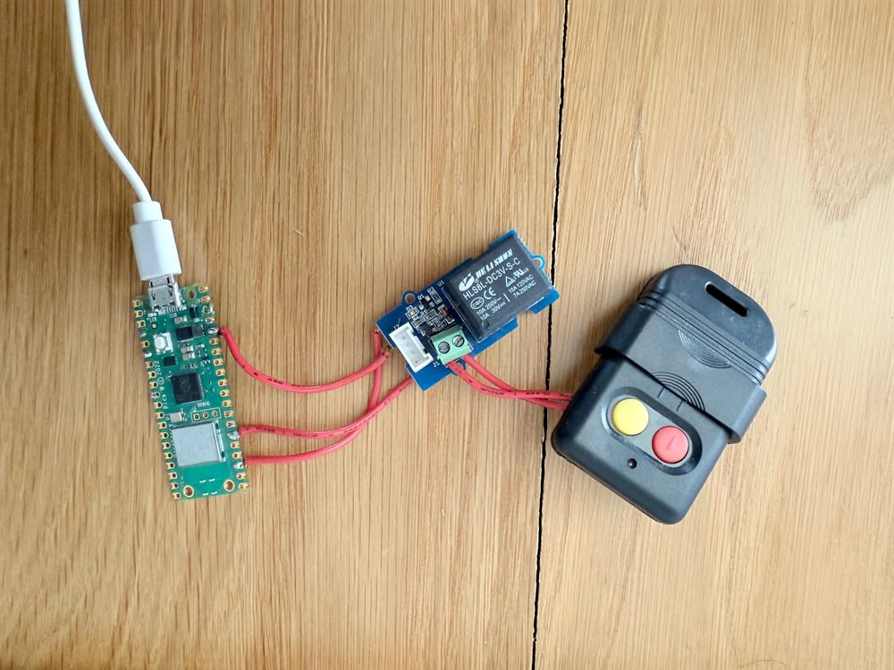

Pico Gate Controller
An old RF gate remote, a single relay and a Raspberry Pi Pico W — enough to turn the front gate into one more button in Home Assistant.

The gate at the end of the driveway came with a 330 MHz remote and nothing else — no app, no network, no way for Home Assistant to touch it. A Raspberry Pi Pico W fixes that: it sits across the remote's button and presses it on demand.
What it does
- The Pico W runs a small MicroPython HTTP server on the local network.
- A single-channel relay is wired across the contacts of the existing gate remote's button. The remote still does all the RF work — the Pico just closes the contact, exactly as a thumb would.
- Hitting
/toggle_gatepulses the relay for one second, the remote fires, and the gate moves. No firmware on the gate itself, nothing to reverse-engineer.
The hardware
- Raspberry Pi Pico W — the £6 microcontroller with WiFi, running MicroPython.
- Single-channel relay module, driven from
GPIO 20(configurable in code). - The original 330/433 MHz gate remote, opened up so the relay can bridge its button.
The web server
The whole thing is a handful of routes in main.py and utils.py:
/— a bare-bones UI page with three buttons./led_onand/led_off— toggle the onboard LED. Trivial, but the first thing you wire up: it proves the Pico is on the network and answering before you let it anywhere near the gate./toggle_gate— pulse the relay for one second.
Wiring it into Home Assistant
The UI page is handy for testing, but the point is to never use it. Home Assistant talks to the Pico with a rest_command, wrapped in a script and dropped onto the dashboard as a button:
rest_command:
toggle_gate:
url: "http://192.168.1.50/toggle_gate"
method: GETFrom there it's just another entity, which means it inherits everything Home Assistant already talks to. I expose it to Apple Home, so the gate opens from the Home app, a Siri command or a Shortcuts automation — and, of course, from the WhatsApp agent elsewhere in this log when it decides the second car has parked. The Pico is the bit of hardware that lets all of that actually move the gate.
Knowing if it's open
Pulsing the remote is fire-and-forget — it presses the button but has no idea whether the gate actually moved. So the gate is also paired with a magnetic reed switch in Home Assistant: a contact sensor that reports whether it's open or closed. That gives the otherwise 'dumb' gate a real status — something to show on the dashboard, warn me if it's been left open, or let an automation check the state before it fires.
Setting it up
- Flash MicroPython onto the Pico W.
- Clone the repo, copy
secrets.example.pytosecrets.pyand drop in your WiFi credentials. - Upload the scripts with Thonny, reboot, and grab the Pico's IP from your router.
- Point the Home Assistant
rest_commandat that IP and you're done.
It's plain HTTP with no authentication — anyone who can reach the IP can open the gate. Keep it on the LAN, behind a VPN or reverse proxy. Never port-forward it.
Adapted for everyday use from initial code by Vivian Balakrishnan. MIT licensed.